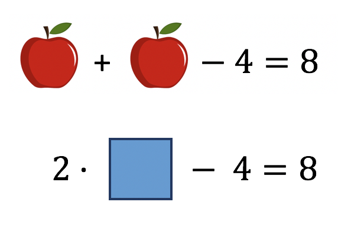

Una ecuación no es más que una igualdad matemática en la que aparecen cantidades desconocidas, que llamamos incógnitas. Resolver una ecuación significa determinar qué valor o valores deben tener las incógnitas para que la igualdad sea cierta. Leer 2x-4=8 suele generar rechazo, pero la cosa cambia si se ve lo mismo representado con dibujos o, simplemente, con una caja vacía en lugar de la x.

Sin embargo, al margen de cómo lo expresemos, el reto no cambia: se trata de descubrir una cantidad desconocida, tal que, si la multiplicamos por dos y luego le restamos cuatro, obtenemos ocho. La manera en que representemos la cantidad desconocida es lo de menos, podríamos llamarla simplemente cosa. El matemático y poeta Omar Jayam utilizaba el término árabe shay, que significa precisamente cosa. Cuando su obra se tradujo al castellano, se transcribió como xay y de ahí derivó el uso de la letra x para designar las incógnitas.
En cualquier caso, resolver una ecuación no consiste en despejar la x, sino en descubrir el valor de una cantidad desconocida, que debe cumplir una cierta relación de igualdad. Es el momento de conocer cómo emplear distintas estrategias, verás lo fácil que te resulta resolver ecuaciones.